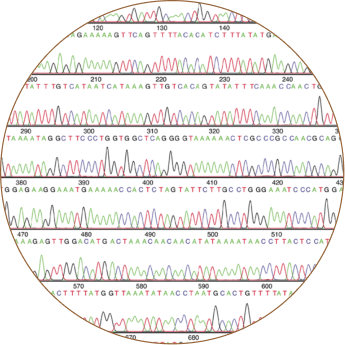
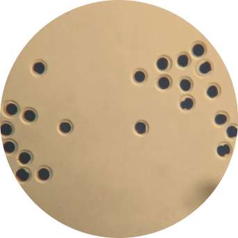
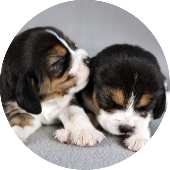
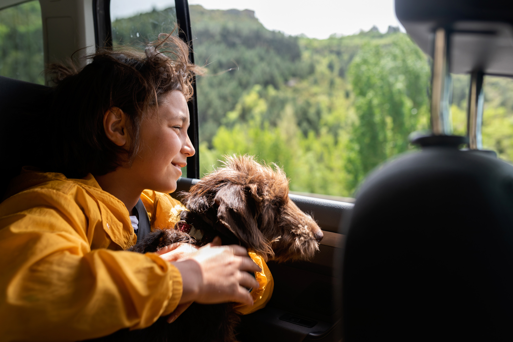
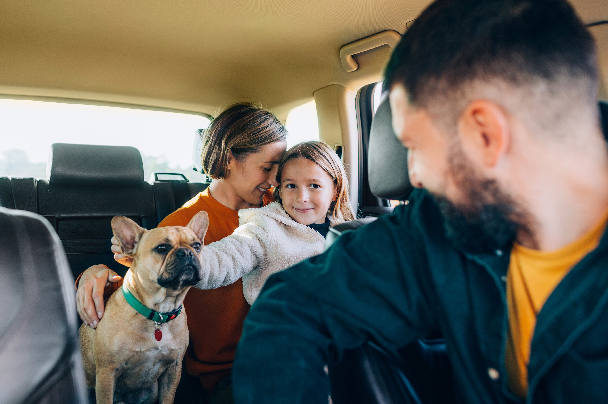

Everyone
deserves
a dog.
A new future for
dog lovers with allergies
Kindred Companion Sciences™ is developing a new generation of dogs for allergy-sensitive households.
Kindred reported, in a peer-reviewed study, the creation of gene-edited dogs that no longer produce the major dog allergen. The patent-pending genomic alteration described in this study is investigational and has not yet been reviewed by FDA.
We're building toward a future where more people can experience life with a dog.
For too many people, loving a dog comes with a catch
1 in 8
Americans are allergic
to dogs
1M+
Asthma attacks annually are linked to dog allergies
25%
of rehomed pets are linked to allergies
Sources: Gergen et al., 2019; Weiss et al., 2015
The science starts at the source
Our research focuses on Can f 1, widely recognized as the major dog allergen.

Edit dog cells

Create embryos from edited cells

Healthy pups are born1
Meet Alfie & Bailey
Alfie and Bailey are the first Kindred dogs. Happy, deeply loved, and very real.
Born in September 2024 in New York, they spend their days playing, napping, asking for snacks, and reminding us why this work matters.
They live with the same love, attention, and veterinary care that guides every part of Kindred's work.

Where we are today
Kindred is moving forward carefully, with ongoing peer-reviewed research and the appropriate regulatory process guiding each step before any dogs are available for placement.
-
First dogs born
Alfie and Bailey are the first Kindred dogs born during this research.
-
Science published
Our work has been peer-reviewed and published.
-
Responsible progress
We're following the appropriate regulatory path with care.
-
Future placements
Our hope is to help allergy-sensitive households experience life with a dog.
Take a walk with us
Join our list to follow our research, regulatory progress, and future availability.
By joining the list, you agree to receive occasional emails from Kindred Companion Sciences. You can unsubscribe at any time.
Kindred in the news
Matt Walker, the CEO of Kindred Companion Sciences, joins CBS Mornings with his gene-altered beagle, Bailey, to discuss creating future options for people with severe pet allergies.
FAQ
What is Kindred developing?
We are developing dogs for allergy-sensitive households.
The science begins with Can f 1, widely recognized as the gene responsible for most dog allergies. In our peer-reviewed research, we made a precise edit to remove Can f 1 in dog cells, then used those cells to create the first Kindred dogs.
We're building carefully and responsibly toward a future where more people may be able to experience life with a dog.
How is Kindred different from "hypoallergenic" dogs?
So-called "hypoallergenic" breeds still produce the major dog allergen: they simply shed less of it. Kindred's approach addresses the allergen at its genetic source.
How does Kindred approach animal health and welfare?
The health and wellbeing of our dogs guide every part of our work. The first Kindred dogs, born during our peer-reviewed research phase, were healthy and developed normally. The patent-pending genomic alteration described in this study is investigational and has not yet been reviewed by FDA.
Why does this matter?
For millions of people, allergies make living with a dog impossible. Kindred is working toward a future where more people can experience that companionship.
Are Kindred dogs available today?
Not yet. Alfie and Bailey are the first Kindred dogs, and we're following the appropriate regulatory path before any dogs are available for placement.
What kind of dogs is Kindred developing?
Happy, healthy companion dogs for allergy-sensitive households. We'll share more about specific breeds as our work progresses.
